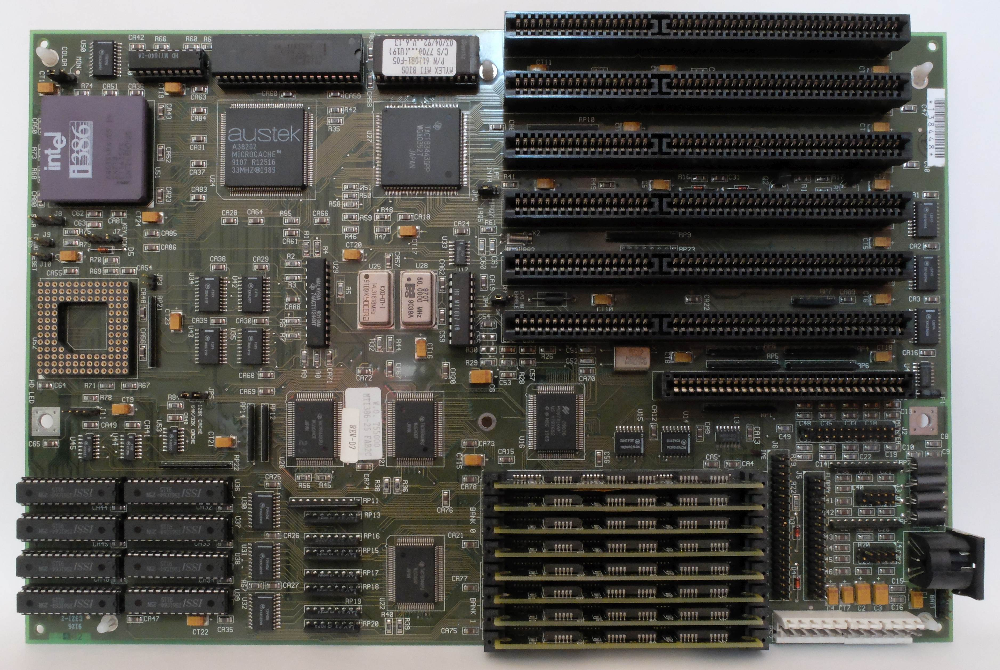

什么是 L1 缓存?
- by @karminski-牙医

(图片来自 wikipedia)
CPU 的 L1 Cache (一级缓存) 是集成在 CPU 芯片上的高速 SRAM, 用于存储经常访问的数据或指令, 以达到降低访问内存成本的目的.
如图, 是一个 Intel i386 主板, 其中 L1 Cache 集成到了左上角 CPU 内部, 而左下角的 ISSI 芯片则是 L2 缓存.
没错, 在这个时代 L2缓存还是外置的. 所以当时 L2 坏掉导致电脑无法启动是很正常的现象.
基本概念
简单来讲 CPU 在内存中读取或写入时, 会检查该位置的数据是否已经在缓存中. 如果存在, 则CPU将从高速缓存中读取或写入, 而不是较慢的主内存.
那么数据是怎么同步的呢？通常我们把内存和缓存中互相传输的数据分成固定大小, 他们的学名叫做 cache lines 或者 cache blocks.
Cache Entry
cache line 从内存复制到缓存时, 会创建一个 cache entry, cache entry 包含复制的数据和内存位置 (叫做tag) .
Cache Hit
当CPU需要读取或者写入数据时, CPU先检查 cache entry 是否存在, 如果 cache entry 的 tag (即内存位置)在缓存中, 则意味着缓存命中 cache hit, CPU从 cache entry 中读取或者写入.
Cache Miss
当如果 cache entry 的 tag 不在缓存中, 则意味着缓存未命中, 即 cache miss, CPU 会分配一个新的 cache entry 若缓存已满需根据替换策略淘汰旧条目) 并从内存中读取数据. 然后再从 cache entry 中读取或者写入.
✅ 优点
- 速度比主内存快100倍左右 (AMD 9800x3D 的 L1 访问 latency 是 0.7ns, 使用 DDR5-6200 内存的 latency 是 65.9 ns)
- 降低内存访问功耗
- 缓解冯·诺伊曼瓶颈
❌ 局限
- 硅片面积成本高
- 容量限制导致缓存颠簸 (cache thrashing)
- 一致性维护开销 (MESI协议)
架构差异比较
| 特性 | x86 (Intel Core) | ARM (Cortex-X) | RISC-V (SiFive) |
|---|---|---|---|
| 典型容量 | 32KB+32KB | 64KB+64KB | 可配置 (16-128KB) |
| 关联度 | 8-way | 2-way L1 指令, 4-way L1 数据 | 2-8 way可选 |
| 替换策略 | LRU | 伪随机 | 可编程策略 |
| 预取器 | 自适应 | 静态模式 | 可选模块 |
| 延迟 | 4-5 cycles (Intel i7-6700 (Skylake)) | 3 cycles (ARM Cortex-A53) | 3-5 cycles (SiFive Freedom U740) |
Refs
- Gallery of Processor Cache Effects
- CPU Cache
- Cortex A53 Documents
- Intel i7-6700 (Skylake), 4.0 GHz (Turbo Boost), 14 nm. RAM: 16 GB, dual DDR4-2400 CL15 (PC-19200).
- Amlogic S905 (ARM Cortex-A53), 1536 MHz, (28 nm). 4 cores. 2 GB DDR3-1824 (13-13-13) (32-bit). ODROID-C2 board.
- SiFive Freedom U740 (U74 core), 1200 MHz, (28 nm). 4 cores. 16 GB (DDR4). SiFive HiFive Unmatched.